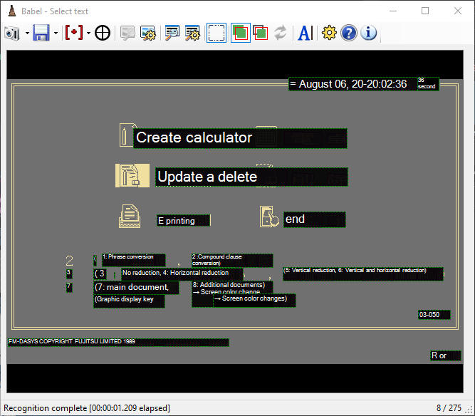
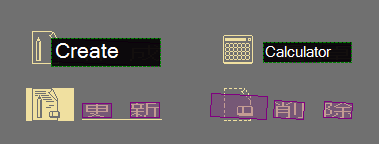
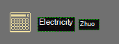
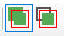
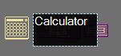
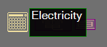
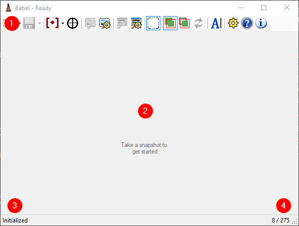
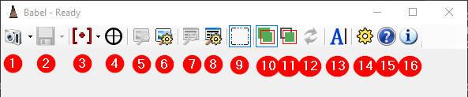

Babel is a free translation utility intended primarily for light home use (non-professional applications) to translate things like old videogames and documentation. Babel will work with anything you give it, but is really designed around these applications.
It was originally developed to translate software from 1980s Japanese computers - just enough to navigate a Japanese operating system or identify the menu options in an RPG, for instance. For these purposes, it often works well. The further you get from this, such as trying to translate manga or magazines, the less useful you will find it. It is not advisable, for instance, to attempt a fan translation of a manga or videogame using this application; leave those tasks to people who speak the language!
In reality, Babel is "simply" an interface to Google's Cloud Vision and Cloud Translate services. However, those services are extremely limited in their functionality, and Babel provides much that you cannot get from Google's own applications - in particular, there is no native Windows client, and the web client for Translate is very basic. Babel lets you do the following:
The program may appear overly complex at first, but all the features are essential, and several buttons you'll probably never use. Translation, and OCR-based translation in particular, is a very touchy process that requires lots of human input, and while Babel attempts to make it as simple as possible, there's only so much that can be done automatically.
In practice, you'll learn to use Babel quickly and efficiently in no time. Let's get started!
When you start the program for the first time you will be asked to agree to a waiver. This section does not replace that waiver, and you must read and agree to it. This is only meant to expand on the info in the waiver. The following information is for your own protection!
First: This app has no intrinsic translation capability. It depends on Google Cloud services, which you must sign up for and obtain credentials for on your own. This process requires a valid credit card. If you are for whatever reason unable to do this, or you are blocked from Google Cloud for any reason, this app cannot be used.
Second: In the process of configuring Google Cloud, you will need to obtain an API key file. You must secure this file as if it were your credit card. While the instructions here will explain how to apply very limited security to your account, if someone gets this file, they could run up an enormous translation bill and you will have to pay it. If you aren't comfortable with this, do not proceed!
Third: The developers of Babel are not responsible for any expenditure incurred as a result of the use of this program. Google Cloud is a paid service, and if you have concerns about limiting how much you can be charged, you will need to take that up with Google. If a defect in Babel results in unintended transactions, you are solely responsible for them, and your only recourse is to not use the application.
The above disclaimers are unfortunate realities of the way the service works. Google, at the time of this programs release, has not seen fit to implement reasonable security measures in their cloud platform. As the developers of this software, we find this outrageous and unbelievable, but have no power to affect it. You use this software entirely at your own risk, and if you have any questions about how to protect yourself or what the actual risks are, you must take those up with Google.
While Babel itself is free software, it depends on Google Cloud, which is not. If we find a way to use a local or free translation service, we will add that as the default mode, but this is the only option we know of at this time. OCR and translation is extremely hard and Google does a remarkably good job of it usually, but they don't give it away.
Google Cloud pricing is somewhat complicated, and this is not a guide to Google Cloud or a reliable list of prices. This is a set of tips so you understand what you're undertaking.
We use two services: Cloud Vision and Cloud Translate, which are billed like this:
Cloud Vision: Pricing guide here. We use the "Text Detection" feature. This is billed per-transaction, and it happens every time you click the OCR button (or AutoOCR occurs, if enabled.)
Cloud Translate: Pricing guide here. This is billed per-character. If you have an image with thousands of words but you only translate the phrase "Je ne sois quoi" you will be charged for 15 characters.
Google seems to permit a certain amount of usage per month for free. At this time, that appears to be 1000 Vision requests and around half a million characters of Translate per month. This information is provided for your convenience only, and you should consider Google Cloud a paid service that will bill at the maximum rate listed.
To install Babel you only need to extract the zip to a folder and run Babel.exe.
The first time you run the program you will need to agree to a waiver, after which you'll be presented with the main window.
To begin using Babel, you will need to register an account with Google Cloud, which you can read about below:
Once you've done this, you'll need to select your keyfile and project name in the Settings window, per the above document. At that point you can begin using the app.
There are four stages to using Babel:
This isn't as complex as it looks, however. The following simple steps will work for you in most cases:
In most cases, this will do exactly what you want. All the following documentation will show you how to do more specific things which will help with tougher situations.
Let's start after you've captured a snap - by pasting it in with Ctrl+V, or using the Snap button and the Viewfinder, for instance.
The image first has to be OCRed to find out where words are. This can be done manually by clicking the toolbar button, or will happen as soon as you take the snap if you have AutoOCR enabled.
Once OCR completes, the snap looks like this:
The purple regions each represent a discrete word that Google has identified. Sometimes these can get very confused, and sometimes words get missed or multiple words run together, but usually Google finds the borders reliably.
This part is where much of the complexity comes in: we must define phrases - groups of text that will be treated as a single "chunk" during translation. Phrases are defined by shapes drawn over the snap, each of which can contain (or "match") one or more identified words. Each phrase is sent to Google Translate separately, and appears in a box like this:

You can create these by just clicking and dragging on the snapped image. Make sure you make them as big as practical - notice that text is scaled to the size of the phrase box.
As soon as a phrase is created, it will be sent off to Google for translation. White text has been translated - if Google is taking a while to do it, you'll see the original untranslated text in grey.
There are a few reasons we have to do this step manually:
To demonstrate, look at what happens if we translate each word of Calculator separately:

Obviously this is nonsense. Google frequently makes mistakes even if it has all the info, but to have a fighting chance, it needs to know which text goes together.
There is a tool called the Autophraser which attempts to do this for you automatically by finding related words. To use this, you simply click the Autophrase button on the toolbar, and all the detected phrases will appear instantly. This is extremely effective in a lot of cases, but not always, so you'll need to manually create phrases at times.
Also, remember that the Autophraser will translate everything on the screen, even things you didn't need translated, and you'll pay for all of it even if it translates silly things like a copyright date, or text that's already in English. If you manually define phrases however, you'll only get charged for the text you actually needed to read.

These icons enable Intersects and Contains modes. Every phrase has this setting internally, and it controls which words are considered part of the phrase. Sometimes you need these when words are so close together that it's hard to cover the ones you want without hitting unrelated ones from another line.
 
The first image is an "Intersects" phrase (dashed border.) Notice that it
doesn't entirely cover the second character in "Calculator," yet it shows the
correct translation.
The second image is a "Contains" phrase (solid border.) It touches both words,
but doesn't cover the second one, so it ignores it.
If a phrase didn't quite get drawn right, you can move it around to see if you can make it cover the words you want by clicking and dragging. You can also delete it and recreate it - other operations like resizing and copying will be made available in a future release.
When you drag a phrase and let go of the mouse, the text under it will be immediately recalculated and retranslated.
If you want to stream foreign-language content, Babel provides a mechanism that might be helpful.
Under the save button dropdown arrow you'll find the option "Save for streaming." This saves a file in the Babel directory called stream.png which contains nothing other than the translated text and some translucent boxes to make it stand out. If you add this as an overlay in OBS Studio and scale it to fit over your original content, the text should line up.
Every time you hit "Save for streaming" again, OBS should reload the image immediately. There's no way to easily hide the text, so you'll have to do this from OBS itself for now.

The main interface consists of:

Babel contains a large amount of functionality, so the toolbar looks complicated, but there are only a few actual operations here - most of these are ways to tweak the basic functionality. Arrows next to buttons open menus with more options, which will be shown indented below.
You're going to spend a lot of time troubleshooting, so get used to it now. What we're trying to do here shouldn't work at all, and will be touchy at best.
In general you should know that trying to translate e.g. the dialogue in a Japanese RPG is going to be sketchy, but simple phrases like menus will be more practical.
Here's an example of a severe case:
Even if you don't speak a lick of Japanese you can probably tell that some of the text is being missed here, and other parts are basically nonsense. This could be due to a bug in Babel, or in Google Translate, or who knows what. After deleting the phrase surrounding the first line of dialogue and recreating it as three phrases, we get a little closer:
It's better, but still not right - this dialogue is really just too much for machine translation to handle.
Sometimes dialogue will be surprisingly legible, and other times it'll be atrocious. One big problem is that you'll never know if what you're reading is a reasonable translation, or a total misunderstanding that just seems plausible - again, don't use this to fan-translate a videogame!
On the other hand, let's take a look at normal gameplay screens:
These menus are largely legible, and the dialogue is sort of readable as well. As limited as this is, you'd probably be able to navigate this game enough to get the gist of it. That's what Babel is intended for, and that's what you should stick to.
Q: I'm trying to translate some text but the
first couple characters don't have purple boxes over them, and the translated
text is obviously missing something at the beginning.
A: That's just how Google is sometimes. There's nothing
you can do about it except wait for them to improve their translation model or
submit a different image. Sometimes, taking a screenshot and putting it through
some filters in Photoshop to increase contrast can help. This is a feature that
may be included in a future release.
Q: I hit the OCR button and nothing happens,
the program just sits there. Is it just slow?
A: You probably have a bad API key, possibly because the
service account was deleted on the Google side. The Google APIs have
very weird behavior when this happens. Try generating a new JSON keyfile
and assigning it in Settings.
Q: I'm getting a popup error that says
something about an API never having been used before? And there's a link?
A: You missed a step in the Google Cloud setup procedure.
Fortunately, Google helps by sending the correct link to fix the problem at in
the error message. Read the error carefully, then click the link to go to the
page to fix the problem (usually just clicking the big blue Enable button.)
Q: I'm getting some kind of bizarre error when
I try to start the program or do something about a library or DLL not being
present?
A: Make sure you have Microsoft .NET Framework 4.6.1 or
newer installed. If that doesn't do it, open an Issue on Github and we'll try to
work with you to figure it out.
Q: When I translate an image, the program
freezes, sometimes for a really really long time.
A: We've implemented a very basic rate limiter in Babel to
prevent accidental overuse of the API. We hope to make this slicker in future
releases, but for now it's just a "crowbar" included for essential safety, in
case the program gets into an infinite loop. You might have triggered it by
accident if you managed to send more than 50 phrases at once. You can increase
this number in the Settings panel, but please don't set it to something
obscenely high - this is for your safety!
If Babel freezes when you aren't doing something very complex, don't just leave it frozen forever, in case it really is stuck in a loop. Wait a couple minutes, and if it doesn't unfreeze, force close it from Task Manager. If the problem recurs, get in touch with us so we can try to figure it out. There's a logfile in the program directory you can use to find out if the same text is being translated over and over, which would indicate this problem.
Q: Something else really weird is happening.
A: If you think it's a bug, go ahead and submit an
Issue on Github.
Please remember that it may be very hard to replicate your problem and in the
end we may have to say "sorry, it's Google's fault."
Q: I have an idea for a KILLER feature!
A: Submit an
Issue on Github for
a Feature Request. This program is the effort of two people, not a business, so
progress will probably not be rapid, but we'll give it a shot.
{kind=link}
{kind=link}
{kind=link}
{kind=link}
{kind=link}